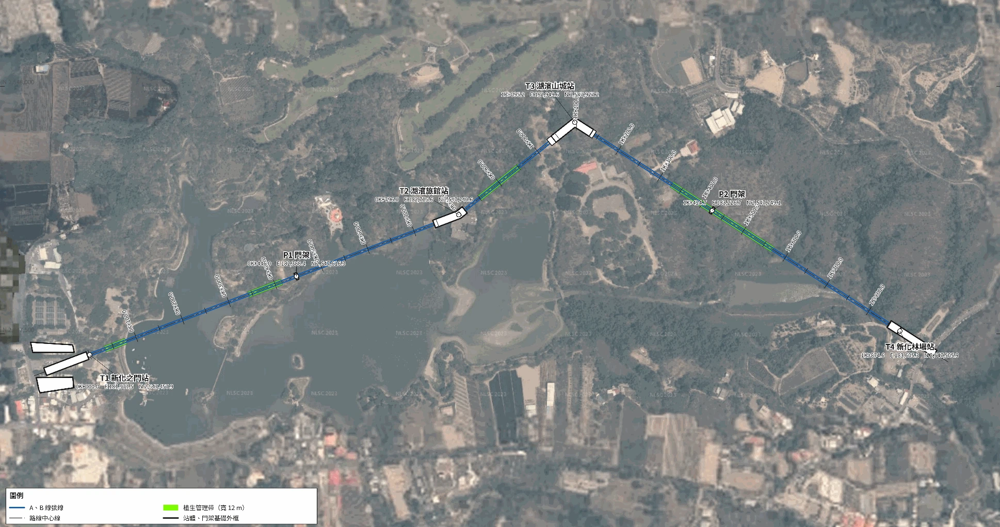

四站基地航照疊位
沿纜車線查看湖岸、道路，以及四站的 CAD 平面、BIM 外廓與完工屋頂。


CS-02 航照底圖採內政部國土測繪中心正射影像。原圖的黑白示意輪廓與線形隨底圖保留。
在 Google 衛星底圖上核對
在「我的地圖」建立地圖，匯入 KML 到圖層，再把基本地圖切換為衛星。
在本站啟用即時 Google 衛星
在部署後的網頁輸入已啟用 Maps JavaScript API 且允許此網域的金鑰。
沿纜車線查看湖岸、道路，以及四站的 CAD 平面、BIM 外廓與完工屋頂。

CS-02 航照底圖採內政部國土測繪中心正射影像。原圖的黑白示意輪廓與線形隨底圖保留。
在「我的地圖」建立地圖，匯入 KML 到圖層，再把基本地圖切換為衛星。
在部署後的網頁輸入已啟用 Maps JavaScript API 且允許此網域的金鑰。